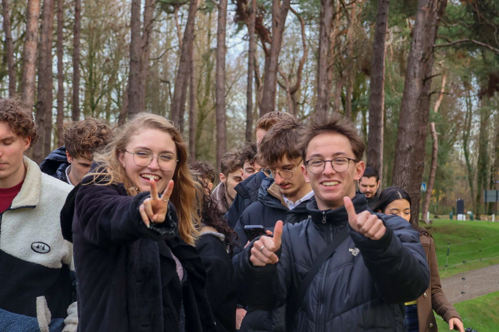

Les relations
internationales à l’IUT
Vous voulez partir à
Vous êtes intéressé par une mobilité pendant votre formation ?
De nombreuses possibilités s’offrent à vous. A l’IUT de Lens il est
possible de faire un semestre, un stage à l’étranger ou encore de
participer à un projet international à l’IUT ou dans une université
partenaire.
Vous serez encadré et accompagné de la candidature au retour de
mobilité par les personnes en charge des relations internationales
de l’IUT mais aussi par le service des relations internationales de
l’Université d’Artois.
01.
Semestre à l’étranger
Vous pourrez partir pour un semestre ou une année pour suivre des cours dans une université étrangère avec qui nous avons un accord, par exemple dans le cadre d’Erasmus+ Les cours seront dispensés en français ou en anglais selon la destination. Vous suivrez les cours avec d’autres étudiants locaux et internationaux.
Stage à l'étranger
02.
Vous pourrez aussi vivre une immersion professionnelle complète, car il est possible d’effectuer un stage de BUT 2 ou BUT 3 à l’étranger dans une entreprise ou dans un laboratoire de recherche au Japon. Si vous optez pour le stage en entreprise, vous aurez le choix entre les entreprises avec qui nous avons des partenariats, à Malte par exemple, ou l’entreprise et le pays de votre choix.

03.
Les projets internationaux
Vous pourrez prendre part à l’un des projets internationaux auxquels l’IUT de Lens participe ou que nous organisons, comme par exemple le projet GGULLVER … Il s’agira alors de travailler avec d’autres étudiants européens dans le cadre d’un projet collaboratif à Lens ou à l’étranger.
Prêt ?
On vous attend !
04.
Vous êtes étudiant étranger et vous souhaitez venir étudier à
l’IUT de Lens ?
Nous vous accompagnons dans les démarches.

Créateur de talent
Réalisateur de rêves
Japon
Irlande
Pologne
Espagne
Canada
Portugal
Roumanie
Rép. Tchèque